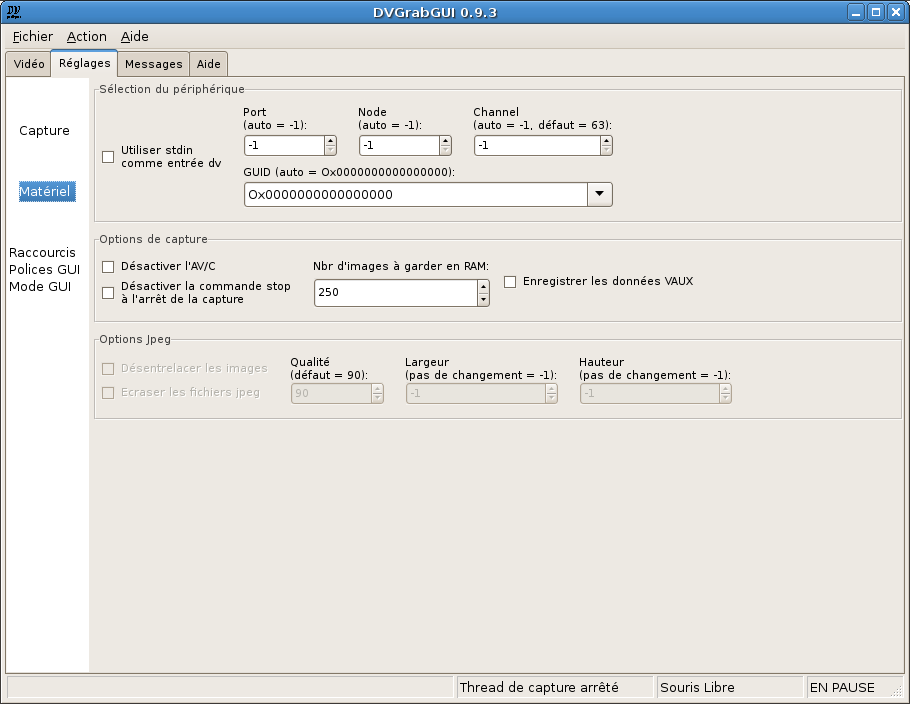

Pré: Référence → Réglages → Capture --- ↑Home --- Suiv: Référence → Réglages → GUI
DVGrabGUI 0.9.4
Référence → Réglages → Matériel
Cet onglet vous permet de régler des options plus avancées, concernant
principalement le matériel.

-
Sélection du périphérique:
Ce cadre regroupe les réglages sur la source matérielle dv. Vous ne
devriez pas avoir besoin de modifier ces réglages, à moins d'utiliser
plus d'une source dv.
-
Utiliser stdin comme entrée dv
Si activé, DVGrabGUI essayera de capturer un flux dv sur l'entrée
standard. Fonctionnalité NON testée! Notez que dans ce
cas, les quatre autres réglages sont désactivés.
-
Port
"Port" firewire utilisé pour rechercher un périphérique dv. Vous
devriez le laisser à "-1" pour permettre à DVGrabGUI de le
sélectionner automatiquement.
-
Node
"Nœud" firewire utilisé par le périphérique dv. Vous devriez le
laisser à "-1" pour permettre à DVGrabGUI de le sélectionner
automatiquement.
-
Channel
"Canal" firewire sur lequel établir la connexion dv. Par défaut,
ce sera sur le "63". Vous devriez le laisser à "-1" pour
permettre à DVGrabGUI de le sélectionner automatiquement.
-
GUID
"GUID" (identifiant) du périphérique firewire à utiliser comme
source dv. Si réglé à "0" ("Ox0000000000000000"),
DVGrabGUI essayera de détecter automatiquement une source dv.
Vous pouvez aussi choisir l'un des périphériques
détectés – DVGrabGUI essaye de vous donner leur nom…
mais c'est sans garantie! Ou vous pouvez entrer vous-même une
valeur de GUID hexadécimale (de type
"Ox00af56980000ce76" – les valeurs
formatées autrement donneront la valeur "zéro" par défaut!).
-
Options de capture:
Ce cadre regroupe divers réglages internes.
-
Désactiver l'AV/C
Ne pas utiliser les capacités de contrôle de la caméra par le PC
(pas très utile pour l'instant).
-
Désactiver la commande stop à l'arrêt de la capture
Ne pas envoyer la commande stop à l'arrêt de la capture. Utile
seulement lors de la capture de cassettes dv…
-
Nbr d'images à garder en RAM
Le nombre de frames dv à garder en cache dans la mémoire vive
(1 frame = 144Ko).
-
Enregistrer les données VAUX
Enregistrer les données Video AUXiliary des frames dv dans un
fichier HTML (truc de geek – attention, très gros
fichiers très rapidement!).
-
Options Jpeg:
Ce cadre regroupe les réglages d'enregistrement jpeg, disponibles
uniquement quand le format de fichier "Jpeg" a été choisi.
-
Désentrelacer les images
Si activé, les images seront grossièrement désentrelacées avant
d'être enregistrées comme fichiers Jpeg.
-
Ecraser les fichiers jpeg
Si activé, DVGrabGUI écrasera toujours les fichiers jpeg
enregistrés précédemment; sinon, il ajoutera les nouveaux (en
utilisant de plus grands numéros dans les noms de fichier…).
-
Qualité
La qualité de la compression Jpeg!
-
Largeur
La largeur des images enregistrées: DVGrabGUI fera la mise à
l'échelle des frames dv si nécessaire (si cette "largeur" et la
"hauteur" qui suit ne donnent pas les proportions correctes,
c'est "largeur" qui sera modifiée!).
-
Hauteur
La hauteur des images enregistrées: DVGrabGUI fera la mise à
l'échelle des frames dv si nécessaire ("hauteur" n'est jamais
modifiée, voyez ci-dessus).
Pré: Référence → Réglages → Capture --- ↑Home --- Suiv: Référence → Réglages → GUI
(c) 2006, 2007, 2008 Bastien Montagne (montagne29 chez wanadoo point fr).
Projet hébergé sur sourceforge.net/projects/dvgrabgui.